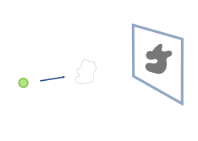
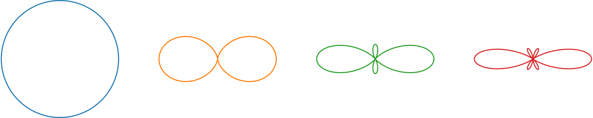
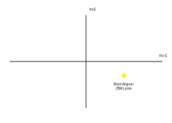
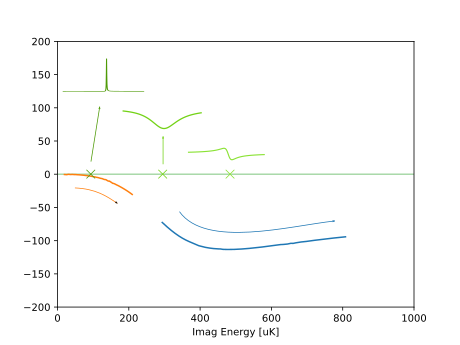
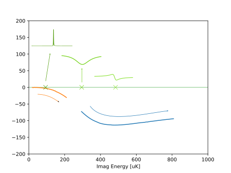

Watching Poles Dance
Resonance interactions in Atomic Scattering
Matthew Chilcott, Kjaergaard Lab
Watching Poles Dance
Resonance interactions in Atomic Scattering
Matthew Chilcott, Kjaergaard Lab
Watching Poles Dance
Resonance interactions in Atomic Scattering
Matthew Chilcott, Kjaergaard Lab
Collisions
Scattering Cross-section: \(\sigma\)
Resonances in Cross-section
$U(t \to -\infty)$$\left|\psi\right>$$ = \left|\psi_{\text{in}}\right>$
$U(t \to \infty)\left|\psi\right>$$ = \left|\psi_{\text{out}}\right>$
\[ \left|\psi_{\text{out}}\right> = S\left|\psi_{\text{in}}\right>\]
The $S$ matrix
\[ \left|\psi_{\text{out}}\right> = S\left|\psi_{\text{in}}\right>\]
The $S$ matrix
$\sigma$?
\[1 - \left<\psi_{\text{in}}\right| S \left|\psi_{\text{in}}\right>\]
\[\left<\psi_{\text{in}}\right| 1 - S \left|\psi_{\text{in}}\right>\]
\[\sigma \propto \big|\left<\psi_{\text{in}}\right| 1-S \left|\psi_{\text{in}}\right>\big|^2\]
\[\sigma \propto \big|\left<\psi_{\text{in}}\right| T \left|\psi_{\text{in}}\right>\big|^2\]
The $T$ matrix: $T = 1-S$
\[\psi(r \to\infty) \sim e^{ikz} + f(\theta, \phi)\frac{e^{ikr}}{r}\]
Radial Symmetry
\[\psi(\mathbf{r}) = \psi(r, \theta) = \sum_{l=0}^\infty \frac{u_l(r)}{r} P_l(\cos\theta)\]
Inter-atomic potential defines scattering
$l > 0$ barrier can produce shape resonance
Closed channel can produce Feshbach Resonance
Closed channel can be tuned
Interaction between shape and Feshbach resonance


Scattered Fraction
\[\frac{N_\text{sc}}{N_\text{tot}} = \frac{\alpha\sigma}{1 + \alpha\sigma}\]
\[ \sigma(B, E) = \frac{2\pi\hbar}{mE}\sin^2\left(\delta_\text{bg}(E) + \tan^{-1}\left[\frac{\Gamma(E) / 2}{B - B_\text{res}(E)}\right]\right)\]
\[ \sigma(B, E) = \frac{2\pi\hbar}{mE}\sin^2\left(\delta_\text{bg}(E) + \tan^{-1}\left[\frac{\Gamma(E) / 2}{B - B_\text{res}(E)}\right]\right)\]

The shape of the Feshbach resonance changes.

\[\sigma \propto \frac{(q + \epsilon)^2}{1 - \epsilon^2}\]
The background phase-shift changes.
The Feshbach resonance broadens

Broadening is due to enhancement
Position of the Feshbach Resonance moves with energy
The Feshbach resonance position kinks

What does this look like?
What does this look like?
Multiple energy resonances at some fields

Scattering: Solving the radial Schrodinger equation
\[ \left[\frac{1}{2m} \frac{\text{d}}{\text{d} r} - V + E\right]\left|\psi \right> = 0 \]
\[ \left[\frac{1}{2m} \frac{\text{d}}{\text{d} r} - V + E\right]\left|\psi \right> = 0 \]
\[ \left[\underbrace{-\frac{1}{2m} \frac{\text{d}}{\text{d} r} + V}_{H} - E\right]\left|\psi \right> = 0 \]
\[ \left[H - E\right]\left< x \big| G(E) \big| x' \right> = \delta(x-x') \]
\[ \left[H - E\right]\left< x \big| G(E) \big| x' \right> = \delta(x-x') \]
\[ G(E) = (E - H)^{-1} = \sum_n \frac{\left|n \right> \left< n \right|}{E - E_n} \]Poles produce resonances
Each sign of Imag($k$) has a different Riemann sheet
Boundstate Poles
Shape resonance
Multiple channels: Many Riemann Sheets
Interactions lead to imaginary offset
We scatter and calculate on the real line
A function is analytic if the derivative is well defined: \[\frac{\text{d}}{\text{d}z} f(z)\]
Identical over a line \(\iff\) Identical everywhere
Padé Approximant
\[f(z) \approx f^{[N,M]}(z) = \frac{P(z)}{Q(z)}\]
\[ P(z) = \sum_{n=0}^{N} a_n z^n \qquad Q(z) = 1 + \sum_{n=1}^{M} b_n z^n\]
Padé approximation has the uncanny knack of picking the function you had in mind from among all the possibilites. Except when it doesn't - Numerical Recipies, Press et. al.
 
